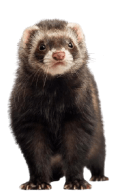
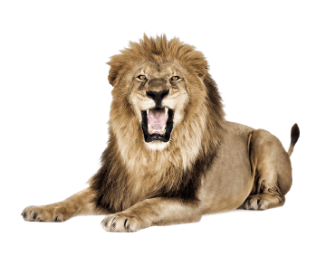
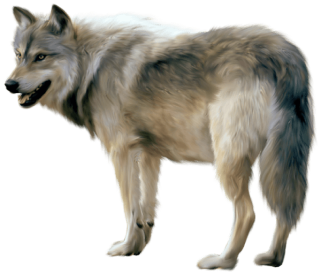
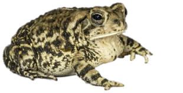
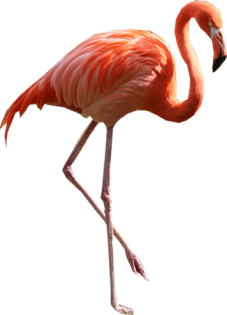
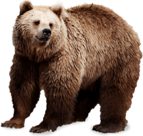

En argentina
25
Ecoparques
actualmente en el país
¿Qué es un ecoparque?
Es un espacio para promover la educación ambiental a través de experiencias recreativas y educativas, fomentando el respeto al patrimonio natural y la rehabilitación de las especies.
Ecoparques en Buenos Aires

Ecoparque Kooch

No hay datos

10 hectáreas
No hay datos
+1 caso

Ecoparque de Buenos Aires

+790 animales
18 hectáreas

20 mil visitantes anuales
+6 casos

Reserva natural baradero
No hay datos
No hay datos
No hay datos
No hay datos

Huellas de la Naturaleza
No hay datos
10 hectáreas
No hay datos
No hay datos
Ecoparques en Argentina









